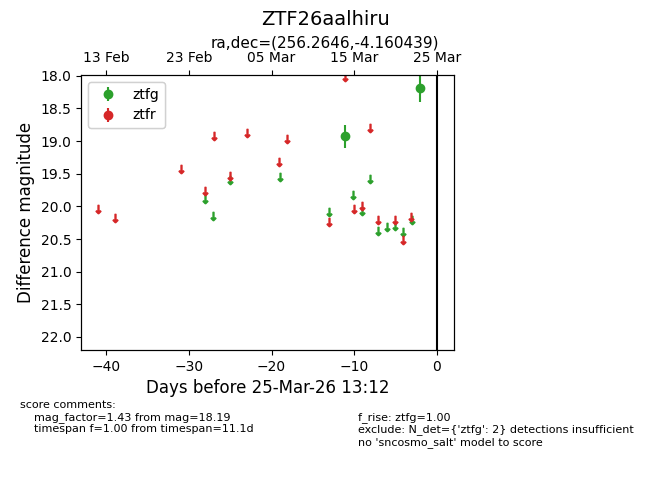
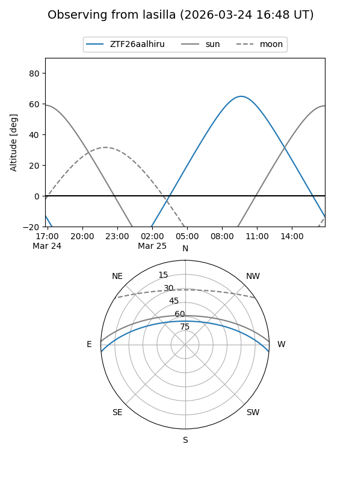
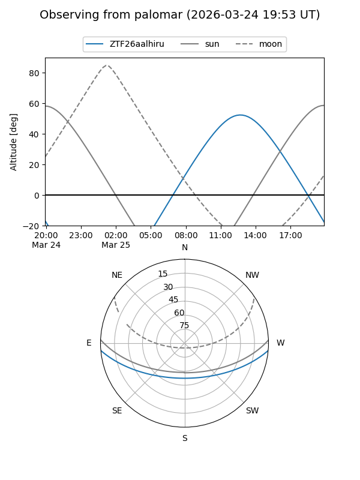

ZTF26aalhiru
Target ZTF26aalhiru at 2026-03-25 13:14
Aliases and brokers:
FINK: link
Lasair: link
ALeRCE: link
alt names
ZTF26aalhiru (ztf,fink_ztf)
Coordinates:
equatorial (ra, dec) = 256.2646,-4.16044
equatorial (HMS+DMS) = 17:05:03.50,-04:09:37.58
galactic (l, b) = (16.1965,+21.36438)
Flags:
Photometry:
last ztfg=18.19
2 ztfg detections
Lightcurve

Visibility


Additional plots